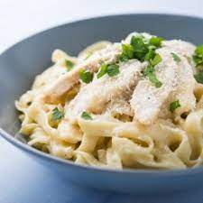

Chicken Fettuccine

Description
Fettuccine (Italian: [fettutˈtʃiːne]; lit. 'little ribbons'; sing. fettuccina) is a type of pasta popular in Roman and Tuscan cuisine. It is descended from the extremely thin capelli d'angelo of the Renaissance[1] but is a flat, thick pasta traditionally made of egg and flour (usually one egg for every 100 grams (3.5 oz) of flour). At about 0.25 inches (6.4 mm), it is wider and thicker than, but similar to, the tagliatelle typical of Bologna,[2][3] which are more common elsewhere in Italy and often used as a synonym. Chicken fettuccine has small added pieces of chicken
Ingredients
- 8 ounces fettuccini pasta
- 2 tablespoons butter
- 3 skinless, boneless chicken breast halves - cut into chunks
- 8 ounces mushrooms, sliced
- 1 teaspoon garlic salt
- ⅛ teaspoon ground black pepper
- 1 ½ cups heavy cream
- ¼ cup grated Parmesan cheese
- Bring a large pot of lightly salted water to a boil.
- Add fettuccine and cook for 8 to 10 minutes or until al dente; drain.
- In a large skillet, brown chicken and mushrooms in butter until chicken is cooked through.
- Season with garlic salt and pepper.
- Add whipping cream and cook until thick, stirring constantly. Add parmesan cheese when at desired consistency.
- Serve over noodles.